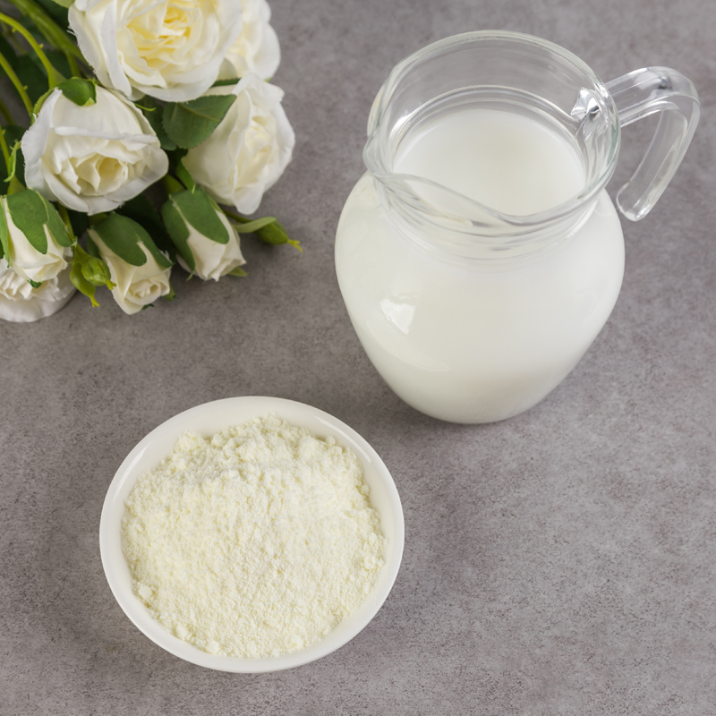

ИСТОРИЯ ПОЯВЛЕНИЯ
Молоко - это любимый всеми и полезный напиток. Его употребление замечательно сказывается на организме. Именно поэтому часто возникал вопрос: как увеличить срок хранения этого замечательного напитка, ведь натуральное цельное молоко так быстро прокисает. И брать его с собой в различные длительные военные кампании или путешествия было нецелесообразно. Прорыв в этой области произошел в далеком 1802 году, когда некий врач Осип Кричевский добился получения из цельного продукта сухого заменителя, не уступающего по питательным и полезным свойствам своему натуральному собрату. Но начинания его не были взяты из воздуха, потому как еще в 1792 году такое молоко упоминалось в научных работах Ивана Ериха «Труды Вольного Экономического Общества». Там есть запись о том, что жители некоторых восточных областей добывали этот продукт путем вымораживания обычного коровьего молока. Тем самым получая, как он выразился, «великие запасы млечных глыб». Основываясь на разработках Кричевского, в 1832 году известный российский химик Дирчов начал выпуск сухого молока в коммерческих целях, а чуть позже, в 1855 году в Англии был запатентован процесс его производства. Промышленных объемов выпуск этой продукции достиг только в конце XIX столетия.
ПОЛЕЗНЫЕ СВОЙСТВА
Польза цельного сухого молока обусловлена наличием витаминов, минералов и других веществ, которые нужны для нормальной жизнедеятельности организма. Есть в этом продукте витамин А, который улучшает остроту зрения. Благодаря наличию витаминов группы В, улучшается деятельность нервной системы, что в свою очередь помогает избавиться от бессонницы и стресса. Есть в цельном сухом молоке и аскорбиновая кислота, которая нужна для иммунитета. Учитывая содержание витамина D, этот продукт снижает риск возникновения остеопороза и рахита. Есть в сухом молоке холин, который нормализует уровень холестерина в крови и снижает проявление отеков. Входит в состав этого продукта и железо, которое способствует кроветворению и улучшает состояние крови. Благодаря совместному действию кальция и фосфора активирует процесс регенерации и укрепления костной ткани. Есть в цельном сухом молоке минералы, которые важны для сердца и сосудов - магний и калий. Это только небольшой перечень веществ, которые есть в этом продукте.
ПРОЦЕСС ИЗГОТОВЛЕНИЯ ПРОДУКТА
Основой процесса изготовления этого продукта является выпаривание воды из обычного молока. Перед началом изготовления свежее молоко пастеризуют, приводят к достаточным нормам жирности и сгущают. После происходит процесс гомогенизации продукта и последующая его сушка в сушилках распылительного или вальцового типа. Причем первые пользуются намного большей популярностью у промышленников, так как их производительность в разы больше, а качество продукта при этом не теряется. На таких установках сушка производится при температурах от 150 до 180 градусов. Но изначально предпочтение отдавалось вальцовым сушилкам, процесс в которых происходил с помощью кондуктивной сушки. Для этого на сушилку подается концентрированный цельный продукт, прошедший выпаривание в мультициклонных аппаратах. Содержание сухих веществ в таком молоке составляет приблизительно 40%. Полученный таким образом порошок содержит в себе примерно 3% остаточной влажности. За счет того, что сгущенное молоко при соприкосновении с нагретой поверхностью сушилки карамелизируется, готовый продукт имеет сладковатый карамельный привкус. Он содержит в своем составе много свободных жиров и благодаря этому является незаменимым продуктом в производстве шоколада. Таким карамельным молоком заменяют дорогостоящее масло какао. Единственным минусом при производстве молока на вальцовых сушилках является низкая производительность. После сушки молока любым из видов, его просеивают и охлаждают. Чтобы увеличить срок использования, продукт упаковывают при помощи вакуума или инертных газов. Для производства сухого напитка существуют два ГОСТа: 4495-87 «Молоко цельное сухое» и Р 52791-2007 «Консервы молочные. Молоко сухое. Технические условия».
КЛАССИФИКАЦИЯ И ХИМИЧЕСКИЙ СОСТАВ
Сухое молоко бывает двух видов: цельное сухое молоко (СЦМ) и обезжиренное сухое молоко (СОМ). В зависимости от разновидности меняется его пищевая ценность и содержание полезных веществ и витаминов. Минеральный комплекс в обоих видах продукта одинаков, однако в обезжиренном молоке содержание веществ немного больше.
Как видно из таблицы, молоко богато такими минералами, как калий (примерно 48% суточной нормы) кальций (100%), фосфор (около 98,8 %). Энергетическая ценность колеблется в зависимости от вида от 350 ккал до 479 ккал на 100 грамм продукта.
Витаминный состав представлен:
- витамином А;
- бета-каротином;
- витамином В1 (ретинолом);
- витамином В2 (рибофлавином);
- витамином В4 (холином);
- витамином В5;
- витамином В12;
- витамином Н;
- витамином РР.
Содержание жиров в цельном молоке порядка 25 грамм, в обезжиренном - около 1 грамма. Белки и углеводы, соответственно содержатся в количестве:
- цельное молоко - 25,5 грамм и 36,5 грамм;
- обезжиренное молоко - 36 грамм и 52 грамма.
Также в состав продукта входят все жизненно важные аминокислоты, необходимые для синтеза белка, насыщенные жирные кислоты и еще омега-6 и омега-3 жирные кислоты. В общем, можно сказать, что витаминно-минеральный состав сухого молока ничуть не уступает составу натурального пастеризованного продукта.
Материал взят с источников: